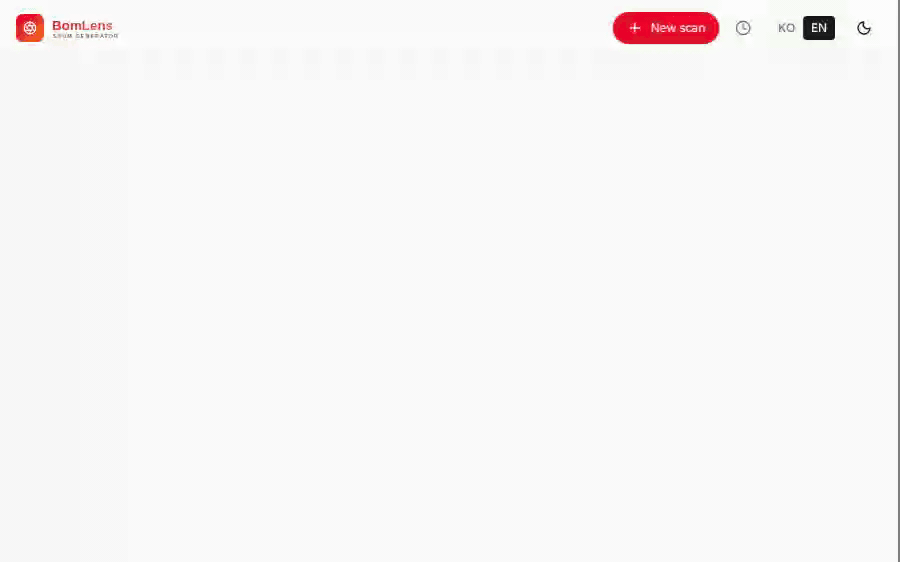

Generate SBOMs and assess open-source risk, all locally¶
A local-first SBOM generator and open-source risk assessor for a single project — no SaaS, no account. From source code, a container image, a binary, firmware, an SBOM you received, or a HuggingFace AI model, it produces an SBOM (CycloneDX 1.6), an open-source notice, and a security risk report in one run. For an AI model it builds a CycloneDX ML-BOM and checks it against the G7 minimum elements for AI, whose clusters overlap with the EU AI Act's Annex IV.
Get started Try the demo Download for Windows (.exe)

Want to see what a result looks like before installing anything? The live demo is the real web UI holding one finished scan of each kind: a Spring Boot project from source, a container image, a device firmware image, an AI model as a CycloneDX ML-BOM, and a supplier SBOM checked against the format requirements. Nothing to install, and nothing is uploaded: it is a frozen copy of results produced by ordinary local runs.
Prefer no command line? Download the installer and double-click it. A Docker engine is required; the free Rancher Desktop works well on Windows. A step-by-step walkthrough is in the no-CLI quick start.

Where to go next¶
-
Getting started
Install through your first SBOM (desktop app, web UI, and CLI).
-
No-CLI quick start
Make an SBOM and a notice with the desktop app — no command line.
-
Input scenarios
GitHub URL, ZIP, local source, an existing SBOM, firmware.
-
Supplier SBOM
Validate an SBOM you received and issue a risk report.
-
AI model SBOM
An ML-BOM for a HuggingFace model, checked against the G7 minimum elements and mapped to the EU AI Act.
-
Notice & security report
Generate and read the outputs, plus using the web UI.
-
CLI reference
Every option, analysis modes, CI/CD.